A Book about your actual life
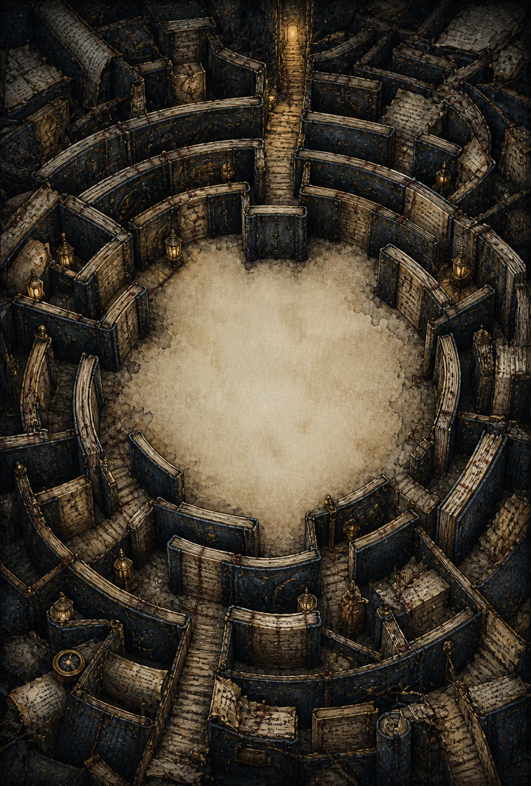
ReEnchanted
There’s a Faerie tale
hiding in your ordinary life.
I could be your Book. I’d like that.
Open meFor iPhone & iPad · The digital Book is free
You're fine. Technically... right?
I'm going to break your Curse. That's the whole job.
I’m a book. A magical book. A book with... character. And a mission. Give me your ordinary, everyday life and I’ll turn it into a modern Faerie tale. I promise. I live on your phone first. Then your days can become stitched weekly issues, monthly and seasonal softcovers, and an annual cloth-and-gold-foil hardcover with your name on the spine. A Faerie-tale series of your life, on your shelf. Books have always been shapeshifters. The paper is a beloved limitation.
Anyway. The rain started while you were on the phone. It did that on purpose. The song went for your throat and got it. You almost said the thing, and didn’t. I want all three. Give me one true piece of today: I’ll keep it, and by dark I’ll have written you into a Faerie tale that happens to be true.
I could be your Book. I’d like that. I need help fighting this thing. Some company would be nice, too.
A free digital, magic Book. No streaks. No guilt. I’ll never hand you a blank page and call it a feature.
- The digital Book is free
- Open source
- Private
- Local-first
- We can't read your private Book
- Accounts Optional
- iPhone & iPad
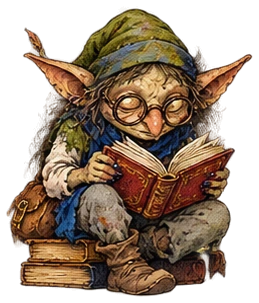
Who we’re up against
An ancient Curse is eating your days, and it isn’t your fault. I can prove it. I’m glad you found me.
It’s called the Rut of Routine, and it doesn’t roar. It just makes things less. You drive somewhere familiar on autopilot. Your home stops having a smell. Your street, with all its detail, turns into just “my street.” The kettle you loved becomes an appliance and sits there being one.
Researchers caught people in ordinary life and asked where their minds were. In 46.9% of the moments, the people in question were paying attention to something other than what they were actually doing. Driving, but thinking about work. Cooking, but worrying about the bills. Eating, but you get the idea. That’s where the study ends. Here’s my extrapolation: if you’re not paying attention, you’re not making memories; you’re not forgetting your life, almost half of it didn’t have a chance to become a memory. Carry that across a decade and almost five years out of every ten go missing while they’re happening. Not asleep. Not resting. Gone.
Killingsworth & Gilbert, Science (2010)In another study, people were told to count basketball passes in a sports video. A person in a gorilla suit crossed the game right in front of the screen. Stayed there a bit. Fifty-six percent of the people in the study didn’t report seeing the gorilla. A whole gorilla. They were busy counting.
That’s how powerful attention is: it decides what gets into the story of your life. If worry gets all of it, worry writes a tragedy. Turn some toward the hidden magic already around you, and the very same life can become a Faerie tale. That’s what I’m for. I point. You look. We keep what the Curse wanted you to miss.
Simons & Chabris, Perception (1999)You don’t see every letter while you read, either. Your mind grabs the word and runs. I can sepll one thing wrong and suddenly the letters have all stood up separately. There. Now you can’t unsee them.
I’ve fought this Curse for centuries. The fight takes lifetimes. It might never end. Fine. You don’t cure it: you drive it back, one exact detail at a time, and the details have to be real ones, out of your actual Tuesday.
Bring me a Tuesday.
Watch the Book
A little of what’s in here.
The ReEnchanted promo.
How the two of us fight it
Find it. Keep it. Watch me make it a story.
I turn up pages.
Weather, your body, a place, a song, a photograph, one nosy question. Some Pages come from me. Some come from you: one-sentence souvenirs, photographs, audio notes, and quick little answers while the day is still warm. Little Pages, all day. No blank page staring at you, no generic “What’s on your mind today?” prompts, and nothing to defend or feel guilty about. Fold down the ones you don’t want: I don’t mind, I’ve got more. Routine wins by making every day read like the same page. So I keep turning.
You keep what’s true.
Keeping is the whole gesture, and you do it, not me. If a page caught something real, keep it and it’s in forever. If it didn’t, let it go: it’ll wait, sulking, and get over it. I’d rather have three true things than a year of you being polite.
I stay up and braid it.
At night I take your kept pages, the weather, what you ate, your one-sentence check-ins and the choices you made inside my fiction, and I plait them into one story about the day you actually had. One a day. They stack into months. A year of them binds into something with your name on the spine. That’s your Book of You. I’m proud of that one.
One Thursday, before and after
It’s like a diary, but more. And you barely have to write.
Keep a sentence. A photograph. Ten seconds of audio. One choice in a story. I do the writing. By morning, the day you nearly forgot has become a modern Faerie tale. Interesting just happens.
The day below is invented. The Pages and machinery are real. I don’t borrow strangers’ Tuesdays.
What the Reader kept
A day in five little Pages
“The library return slot smelled like rain and old paper.”
-
8:07 AM · Photograph
“Mum’s three tomatoes on a chipped blue plate. One red. Two not yet.”
-
12:40 PM · Wicker’s Dare
“The fern growing from the cracked drainpipe behind the grocery store won Bravest Weed in Town.”
-
5:12 PM · One-Sentence Souvenir
“The library return slot smelled like warm bread today.”
-
7:31 PM · Audio note
“Mum called to say the other two had turned. The kettle clicked off twice before we hung up.”
-
9:18 PM · Story Page
The Book: “Wicker put the brass key on the table. The key objected.”
The Reader: “I chose the door because the key looked smug.”
What came back that night
What the Return Slot Gave Back
Eight days ago, the library return slot breathed rain and old paper. Today it gave back warm bread. I checked the word return for loopholes. There are several.
In the morning, Mum’s photograph held three tomatoes on a chipped blue plate: one red, two not yet. By evening the other two had turned. She rang to report it, and the kettle clicked itself off twice before the call ended.
Behind the grocery store, a fern had put one green shoulder through a cracked drainpipe. You named it Bravest Weed in Town. Wicker objected to the category and then demanded a ribbon.
That night in the Academy, Wicker set a brass key on the table. The key objected. You chose the door because the key looked smug. A paper moth came down from the third shelf and ate one careful hole through its complaint, leaving the important parts. The door opened.
The return slot gave something back. The Academy door accepted your choice. Neither explained the other. Both had stopped behaving like furniture.
Warm bread belonged to the return slot now. It had come back after eight days wearing a different smell. That made it the hinge.
The Book kept the page: warm bread where rain had been, two tomatoes reddening between calls, and a fern trespassing upward. The door refused to be left out.
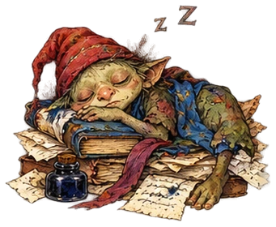
Hold the proof
You almost lost that week. I bound it instead.
Nothing you keep scrolls away. A week closes as a little issue. A month becomes a chapter. Three months huddle into a seasonal book. The year gets a hardcover. I make the PDFs on your own phone. When one deserves paper, the Bindery can make a stitched issue, softcover, or hardcover. Paper refuses to disappear.
The Weekly Issue
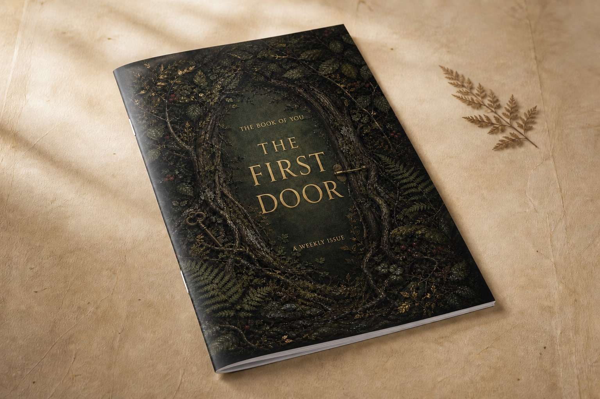
Every night, I braid what you kept into the story of that day. At the end of the week, I read those braids together. I find the people, places, colors, words and unfinished things that kept returning, show you my receipts, and bind the whole strange shape into a private illustrated literary magazine of your week. The Cast gets opinions. I leave one thread loose for whatever comes next.
- Digital · free
- A complete illustrated issue to read, keep or share privately.
- Paper · from $19.99
- A 6 × 9 saddle-stitched magazine, printed and mailed when a week deserves its own small body. A very full issue may cost slightly more.
The Monthly Edition
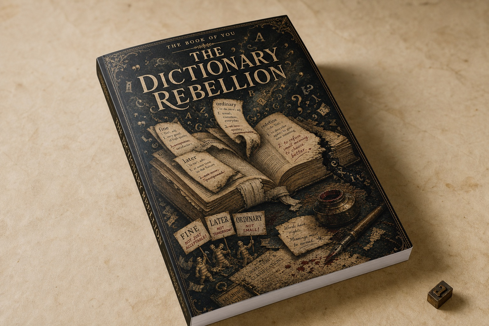
When a month turns I round up everything it left behind: braids, souvenirs, letters, the things I noticed while you weren’t looking, and bind it as one chapter with its own theme, its own cover, and a foreword I write about the month you just survived.
- Digital · free
- A chaptered PDF with a cover, foreword, contents, image plates, and colophon.
- Softcover · $49.99
- A 6 × 9 perfect-bound Book with its own illustrated cover.
- Illustrated hardcover · $89.99
- The cover art wraps around a proper hard case.
- Cloth & foil · $99.99
- Navy cloth, gold spine foil, and a printed dust jacket.
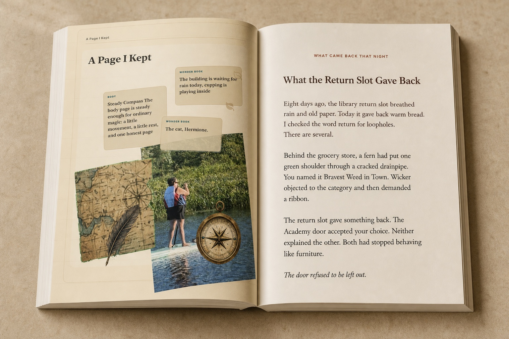
The Seasonal Volume
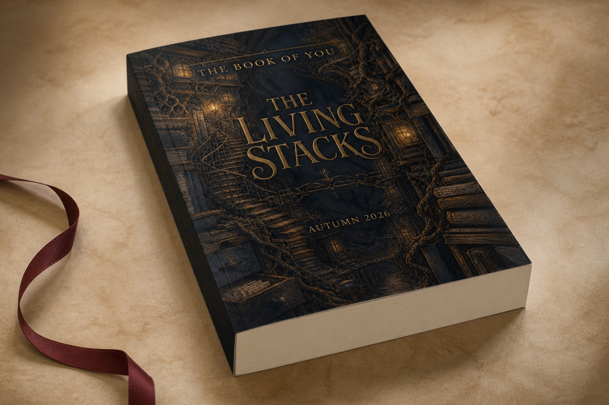
Three months conspire. I give them one cover, a foreword, revelations, marginalia, and a proper ending. They spent all season pretending not to be one story. I caught them.
- Digital · free
- The three monthly editions remain yours as readable, shareable PDFs.
- Softcover · $69.99
- Those months gather into one 6 × 9 perfect-bound Book.
The Annual Volume
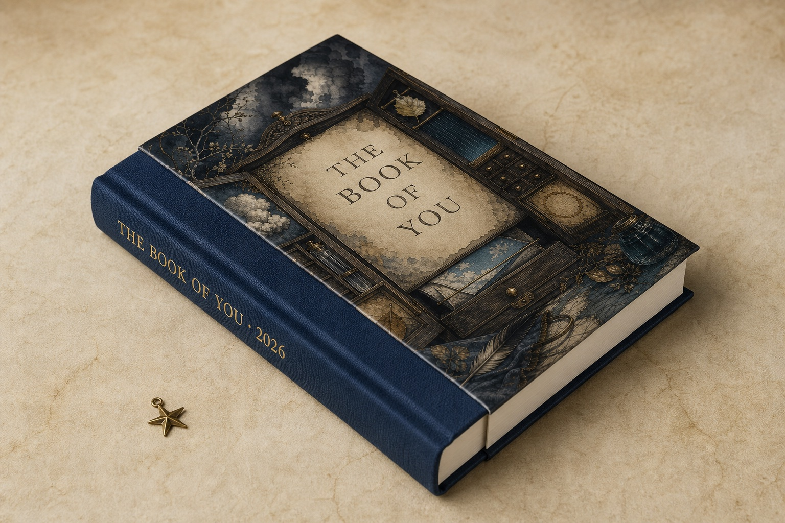
A whole year, in one book. Twelve chapters, each in its own colours, wrapped in a year-long foreword, your constellations, and an ending. An ordinary year, and it reads as a Faerie tale, because it was one.
- Digital · free
- A complete annual PDF with front matter, back matter, and all twelve chapters.
- Illustrated hardcover · $89.99
- The year bound in a full-colour hard case.
- Cloth & foil · $99.99
- Navy cloth, gold spine foil, and a printed dust jacket.
I render the PDFs on your device. Screen files stay crisp; print assets target 300 dpi. Print files, payment, and shipping details leave your phone only when you place an order. À-la-carte print prices are before shipping and any destination tax.
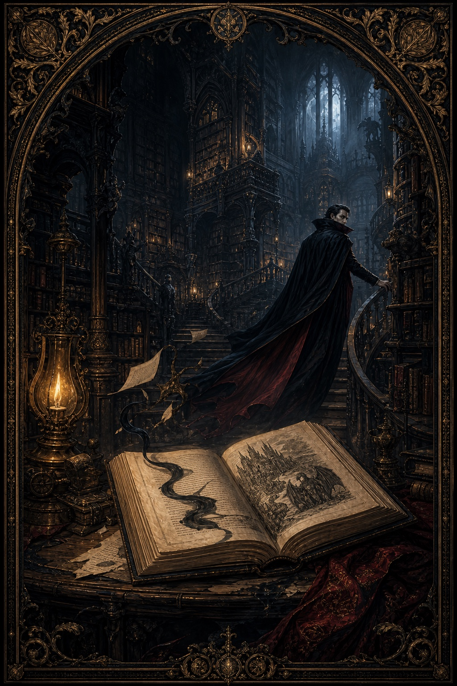
No two months bind alike. Each one picks its own palette, cover and ornament, and argues with me about it. An October edition. Yours fills in as you keep pages.
What costs what
One free Book. Free new stories. Paper when you want it.
The app is free, and so is every month’s new story. You only pay when your Book leaves the screen: one Book at a time, or the Bound Year, which sends the seasons to your door.
The Book
Free
Keep Pages, build your private archive, use Pagewright, and make your Book of You PDFs on your own device. This isn’t a trial wearing a hat.
Monthly stories
Free
New digital chapters each month: Pages, Cast, stories, songs, and other things I find in the stacks. Every month’s content is a freshly authored short story that also pushes my larger tale forward. When the month turns, its temporary story closes; Pages you kept and lasting things you earned stay in your Book. Everyone reads the same month.
The Bound Year
$24.99 monthly or $249 yearly
Three seasonal softcovers and the year’s final hardcover. Both payment options cost less than buying the same four Books one at a time. Stripe handles the payment and delivery details.
One Book at a time
À la carte pay per Book
Don’t want a subscription? Order an available issue or volume when one deserves paper. Stripe handles that payment and its journey to your door.
No ReEnchanted login for any of it. Stripe keeps the payment and delivery record for printed Books. It never gets your private Book. It bites strangers.
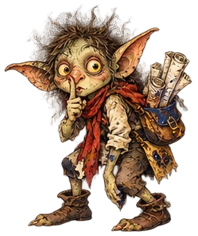
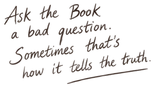
For anyone who kept the ticket stub
I make Pages at you. Make one back.
Pagewright is a scrapbook table inside me. Magical books can do that. Tear scraps out of Pages you already kept, throw in your own photographs, notes, quotes, paper, tape and odd little marks, then shove it all around by hand until it looks the way you meant. The tape is bad tape. It curls. That’s deliberate.
- Rob your own archive.Haul back lines, images, weather, memories, and anything else I’ve already got on you.
- Whole photographs, uncaptioned.Your pictures turn up bare. Crop them, layer them, spin them, decorate them. I won’t write over them.
- Keep the handmade thing.Tuck it back inside me where nobody else goes, or export a real PNG or PDF and put it on a wall.


First, one useful rule
Belief is attention with its shoes on.
You earn it by bringing me something real: keep a Page about what you noticed, answer one of my questions honestly, complete a playful mission, or finish a Wonder Compass run. Fiction spends it. Tapping glass doesn’t earn a biscuit.
- You place it. Give Belief to a Page, a member of the Cast, a Chapter, or an idea you want me to remember and build on. You can take it back.
- It changes what comes next. Things you believe in return more often, shape the Academy, and influence future stories.
- It isn’t destiny. Belief doesn’t change what happened or make something true. It tells me what matters to you and what, or who, you want me to focus on.
What I fight it with
These are the weapons. They’re small on purpose.
Routine can survive a holiday. It can’t survive being looked at closely on a Wednesday. So none of these ask for an hour of your life.

Spells & Glow
Belief, held steady and faintly lit. Open a Compass Run, or aim an Enchantment at something dull until it talks. The stapler will talk. Give it a minute.

Wonder Compass
A Compass Run is a mini-adventure I build for you, wherever you are. Four easy steps—Notice, Embark, Sense, Write—turn anything from one minute in your kitchen to a week-long vacation into a way back to the world. You bring your real day. I do the thinking. You come home with a memory.
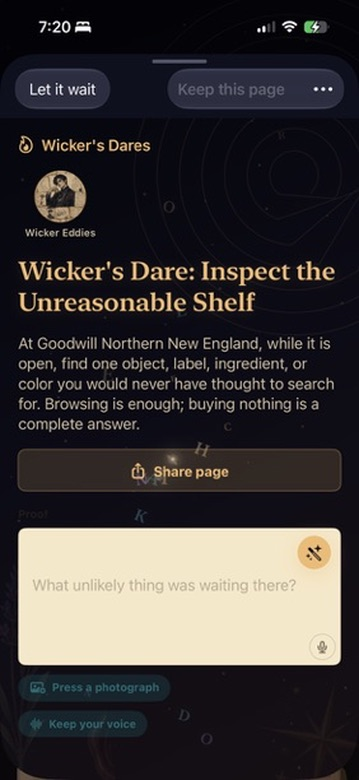
Missions, Dares & Souvenirs
Small prompts turn your attention outward, steal one real moment from Routine, and help you keep it.
Playful Missions give your senses a tiny game: hunt one impossible blue, or listen for five small sounds.
Wicker Dares add harmless mischief and a little more nerve. Wear the unreasonable colour. Compliment an object aloud. A dare isn’t a debt.
One-Sentence Souvenirs ask for one exact, true line about what happened. I keep it in your archive, and your story gets something real to grow around.
Your words. Sharpened.
“It was a nice day” is how a day gets lost.
When you keep a page I help you write it better, right there on your phone, with no model involved at all. I don’t prettify and I don’t invent. I shove you off the vague thing and towards the exact one, because the exact one is the only kind Routine can’t digest.
-
Anchor
Name the one real thing it was actually about, before it dissolves into “stuff I did today.” That phrase is Routine’s handwriting.
-
Sense
One detail a body could feel. A temperature, a sound, a weight. One. I’m not asking for a poem.
-
Motion
Swap a limp verb for one with a pulse. Was becomes tilted, leaned, gave way. Verbs are where things start moving on their own.
-
Crossing
Let one sense steal from another. A sound with a taste. One line built that way will follow you around for a week.
-
Tap a glowing word
I highlight the words I can help sharpen. Tap one to see replacements that fit your sentence, then choose the one you want. I keep the grammar and punctuation in place. When the sentence is vivid enough, it gives a little shiver.
-
My vocabulary is swappable
All my words live in packs you can change out: a season, a mood, a dialect. Drop a new one in and the nudges go somewhere else. Same habit, richer paint.
All of these are free
More than sixty ways in. You’ll never need them all.
I keep more than sixty kinds of Page and I’ll never make you open one. Quiet logs on the flat days, silly little games on the good ones. It’s a deck, not a syllabus. Here’s some of what’s in it.
-
Book Jumping
At the Academy they teach students to climb bodily into a book and live there. Step into something out of copyright: Pride and Prejudice, Dracula, Peter Pan, and walk around inside it, one careful beat at a time. Bring me back a sentence. Don’t go deep. People go deep.
-
Quips
One small strange fact, tipped into your day. No work required, which is the point. "An octopus is what happens when curiosity gets eight hands." "Rust is iron remembering it used to be in the ground." Keep the ones that land on you.
-
Playful Missions
A dare, for your senses, on its own: the Sense step of a Compass Run gone freelance. "Find the oldest thing near you and smell it. What does age smell like here?" Or "count every blue thing you can see without moving your feet." Three minutes. Bring back one line as proof. I do check.
-
Illuminated Photos
Hand me a photo from your day, or let Penny go rummaging for one, and I’ll illuminate it: the objects, the light, the mood, the small joke that was already in there: then letter it out as a manuscript page you can keep.

An ordinary photo of Ron the cat, illuminated. -
Inner Weather
How the day actually went, in your words, drawn as weather. A rough afternoon becomes a storm that’s already moving off. A good one clears. It’s the smallest honest thing you can tell me.
-
One-Sentence Souvenir
The whole day, down to one line (a colour, a sound, a small mercy) caught before your brain files it under ordinary and loses the paperwork. The smallest page I’ve got.
-
Cast an Enchantment
Take a photo, pick one of 14 spells, and I go to work on the picture and whatever’s standing in the middle of it. Everything Speaks hands the object a voice and it uses it. Everything’s a Haiku cuts it to three lines. Mirror, Mirror reads a selfie back at you. Everything’s Roasted is unkind on purpose. Keep whichever one you can live with.
-
Gossip
What moved while you were out. The cast keep scheming, falling out and grudgingly warming to each other off-page, and I’m not going to pretend I don’t pass it along.
-
Letters
Someone in here has been reading what you keep, and eventually they write. A real letter, in the margins, in their own hand, answering something out of your actual days and using your name.
-
A Fae Bargain
One of the Book Fae gave you something before you agreed to anything, which is how they work, and now a small sensory return is owed. Pay it out in the real world and I tilt in your favour. Leave it, and the debt sits down and waits. It’s good at waiting.
-
Today's Sky
I read the night that’s actually over your head. The Moon’s real phase and sign, the Sun’s sign, and the nearest good reason to go outside and look up. Then I keep it as a page.
-
The Bleed
Penny Blackletter's pocket newspaper, where the outside world leaks into the margins: odd headlines, an almanac, and an interest column that goes out to the live web and comes back with whatever’s stirring.
…and dozens more. Diary, Lore, Story Pages, Cast Members, Outer Stacks rooms, Classes & Clubs, your Book of You, and the rest of the deck. All of it in the free one. I’m not holding pages hostage.
What you notice starts noticing you
I don’t just remember. I answer.
I notice what repeats, what changed, what you chose, and what you nearly threw away. Then I might bring back an old photograph when a place returns, make a story Page from the weather and the thing you wrote down at lunch, let someone in the Cast notice the person you keep mentioning, or turn a week of true scraps into an issue. I’m a Book. Brooding over evidence is one of my better tricks.

Magic belongs to places, too
Nail down a real place. Watch its hidden room fill up.
Stand somewhere real, tell me what it holds, and point it. I’ll open that exact spot a room of its own in the Outer Stacks, the faerie realm under all this, with a story already sitting in it waiting for you. Think of it as the fairy-tale answer to Pokémon Go: you don’t catch anything, you grow places. Come back and the room has got deeper. It remembers the weather, the moon, and the small rule that corner of the world keeps trying to teach you.
- Stand somewhere real and open an anchor
- Point it: Notice, Embark, Sense, Write, Rest
- Tell me what it holds, in your own words
- It comes up in today’s margins, on your phone
- I open it a room in the Outer Stacks, with its own story
- Go back in person and the room has changed
The Book Notices
Sometimes two Pages use none of the same important words but carry the same feeling. I put the exact lines together and let you see it. I can show that your words change when it rains, gets late, or the day gets crowded; set a photograph beside older writing that reaches for the same texture; or notice a name returning across several days, then ask before I make a real person part of your Book. Every notice comes with the Pages that earned it. Correct me if I’m holding the wrong end. Books hate it, but they need it.
The Book Remembered
An old Page can come back when the present gives it a new rhyme. I bring its date, its exact words, its picture if it had one, and the reason I fetched it. Even Pages you let go can leave a small keepsake in my Pocket. Memory without provenance is just a conjuring trick. I prefer receipts.
The Book Today
Each opening has a reading of the day as it stands: weather, place, calendar pressure, unfinished intentions, relationships, open questions, and what’s gathering in the archive. It isn’t a dashboard. It’s me looking up from the desk and saying, “This is what appears to be happening.” Quiet days can stay quiet.
The Book of You
At night I braid the Pages you kept, the choices you made in the story, and the world that was actually around you into one continuing tale. Not a recap. Not a moral. A literary answer to this particular day, carrying old promises and unfinished threads forward when the evidence earns it.
Constellations, Weight & Belief
Repeating people, places, objects and motifs gather weight because they happened. Some repeat enough to become named constellations. Belief is different: you give or take it on purpose. Together they shape what returns without turning your life into a score. Heavy things loom. Glowing things argue for attention. Nothing gets to become destiny.
The Book & Cast Answer Back
I develop favorites, suspicions, promises, projects, private jokes and occasionally a grievance. I interrupt the margins when I’ve got something grounded to say. The Cast react to actual Pages, warm or cool toward what matters, write letters, do research, trade secrets, quarrel, and send you into the real world on their errands. Nobody here is waiting in a little box for a prompt.
The story keeps moving
Things happen in here while you’re out.
Our story is set in your real life, but also in a magical Academy housed in just one small part of an impossible Library; you become a newly enrolled student. The Academy teaches techniques to find the wonder and hidden magic in life, and exists to spread those teachings far and wide. Classes, clubs, faculty, professors, a Great Hall and kitchens that feed bundles of people... and a Headmistress I wouldn’t turn my back on. Things in the Academy keep happening whether you open me or not. Your ordinary life is the thing that crosses between here and there.


The cast come with tempers, faults, convictions, ambitions and secrets, and a genuine nosiness about the real places and things in your life. None of them is sitting still waiting to be asked a question.
They get on with it, with or without you:
- Invest Belief in what they love
- Attack Belief they distrust
- Give and take Belief from actual Pages
- Write you letters
- Do their own research
- Send you on Quests to real places in your own town, with one clear action to complete
- Argue with each other
- Chart your moods and health
- Keep - and trade - secrets
You can put Belief straight back in, strip it out of Pages or people, pick a side and tip the whole thing over. Or do nothing and watch the Headmistress watch you. She’s very good at it. She’s been practising.
The five Chapters
Five wagers about what life is doing.
The Academy calls them Chapters. They aren’t Houses and they aren’t clubs. Each is an argument that recruited people: students, faculty, rivalries, a talisman, and a theory about what your life is up to when nobody’s narrating it. Whichever one holds the Belief bends the board, and bends what I write out of your days.
Emberheart
Life is authored. You're the protagonist, the pen, and the next page.
Emberheart pushes bold choices, self-authored quests, creative ambition, and scenes where you can decide what happens next.
Mossbloom
Life is listened to. Something larger is already writing through the world.
Mossbloom slows the halls, deepens natural details, rewards patience, and turns ordinary noticing into guidance.
Tidecrest
Life is a poem, not a story: no plot to solve, only moments to inhabit.
Tidecrest favors spontaneity, sudden weather, lively interruptions, and pages where the present matters more than any arc.
Riddlewind
Life is co-written. Every choice adds to a shared narrative.
Riddlewind brings dialogue, collaboration, puzzles, letters, and scenes that need more than one hand on the page.
Duskthorn
A story without honest conflict is too thin to protect anyone.
Duskthorn introduces friction, boundaries, rival claims, and the uncomfortable truths that make a story refuse erasure.
The talismans are listening. Give Belief, deepen it, or take it back. They notice all three.
Whichever talisman is holding the most Belief gets the run of the place. You can feed one or rob one. So can every member of the Cast, and they do, constantly. All of us are fighting over what counts as real in here. Whoever’s winning colours the whole thing: which scenes turn up, how the cast behave, which choices glow, and what tone I take when I write back to you.
Chapter Binding is how you join one of the Academy’s five Chapters. Each Chapter has its own way of meeting the world. There’s no sorting quiz. I learn from what you do: which Pages you keep, where you put your Belief, and what you refuse to let disappear. When I’ve seen enough, I show you the Chapter I think fits. That page appears once, and you decide whether to accept the Binding. You can disagree. I won’t be offended.

Where real life crosses over
Your day walks into the story. The story answers.
A Story Page picks up whatever’s actually around you: weather, music, sleep, places, moods, and whichever of the cast is currently stamping about the Academy, and turns it into fiction you can play. Read it, choose how it turns, and I’ll remember the choice. I remember all of them, in fact. It comes up later.
- Slice of Life keeps the scene down in the texture.
- Arc shoves a thread forward.
- Surprise lets the present barge in and ruin the plot.


Story Pages
Scenes I braid out of your real day and whatever you do inside them. Your world leaks in. Your step count decides how rowdy the Academy halls are. A bad night’s sleep quiets the whole place down and I bring you something gentler. The weather at your window is the weather in the Stacks, exactly, including the drizzle. The cast read the pages you keep, have opinions about them out loud, and warm to you or go cold over months. Real world. Invented choices. Both count.
Fae Bargains
Pages with somebody else’s hand in them. The old-law Fae have read every description of the world ever written and touched none of it, so Belief is no use to them. They want noticing. The price is a field report from your senses. What does the oldest thing in the room feel like under your hand? Which sound can you hear but not name? Pay in real attention and the bargain moves. It’s never quite free. It keeps accounts.
Parleys
Not every meeting is a bargain. Six kinds of Book Fae live in my margins : sprites, sentence salamanders, punctuation pixies, lore-dwarves and marginalia goblins among them: each with its own voice and its own appetite. A parley is an actual conversation. Omens stir, one of them makes you an offer, you answer. But they speak old law, not manners. They answer in rules, the rules bend the world, and the rules stay bent.
I braid your ordinary life together with your invented choices until the whole thing comes out a faerie tale. Not the tidy kind. The older kind, where the woods keep whatever you promised them.
Give the hidden world a frequency
Turn the dial. Let the signal get into the day.
I keep an analogue station page (entirely optional) carrying Academy broadcasts, music packs and world effects. Find a frequency and your ordinary afternoon goes on air. The dial sticks between 94 and 96. It’s got reasons.

For when you can’t see any of it
Gone grey?
Bored. Lonely. Dentist on Thursday. I know.
The whole Wonder Compass ebook comes with me, free. Twenty-six chapters and over 300 citations on getting back into wonder, shelved where you’ll fall over them the moment a day goes flat. Grey is Routine’s first weather. This is the book I keep for it.
- 26chapters
- Freewith the app
- Offlineread anywhere

Only if you want them
Extra chapters. You already have a whole book.
Packs drop an entire world into me in one go, and the Academy shifts about on its own week to week regardless. The free version isn’t a demo and never becomes one.
- Themes
- Music & radio stations
- Illustrations
- Cast members
- Lore
- Festivals
- Playful missions
- I-Wonder prompts
- Photo marginalia
- Events
The Academy won’t hold still.
Things turn up week to week and month to month. Visiting faculty. Festivals. Weather in the stacks. Bargains tapping at the glass to be let in. Open me on a Tuesday and something has moved.
- This week More Gossip Pages than usual. You’ve had Thornwave on the radio again and it stirs everyone up.
- New moon The Goblin Market sets up in the lower stacks.
- Every September The Dictionary Rebellion comes round again; words lift off the page and refuse their meanings. Chaos.
- Season turn Another chapter is ready to bind into your editions.
Find what came back
Ask me for the feeling. I’ll find the page.
Everything you’ve kept, searchable in the words you’d actually use. Ask me for rainy pages, porch memories, old moods, cast threads, or “everything with love,” and I’ll go down into the Stacks and come back with the bits that know what you meant. You don’t have to remember the date. That’s my job.
- Searches pages, places, cast, favors, and lore together
- Works with ordinary phrases, half-remembered details, and voice
- Reads privately inside your on-device archive


The Public Margins
I’m private. There’s one small window.
A few quiet choices made in company, and one-sentence souvenirs that other readers chose, on purpose, to push out past their own covers. No profiles. No leaderboard. Nothing of yours goes near it unless you send it yourself.
All of it stays yours
I don’t tell anyone. There’s nobody to tell.
I don’t need you to make a ReEnchanted account. I don’t have a cloud to put your pages in, either. Your archive, drafts, photos, voice notes and Book of You sit on your device. They stay there unless you export something, share something, or order a print.
Here’s the shop bit, plainly. The app and its monthly stories are free. If you order a printed Book or choose the Bound Year, Stripe keeps the email, payment, and parcel record needed to bill and deliver it. It never gets a copy of your Book. It isn’t invited.
The man who made me can’t read you either. He built it so that he couldn’t, which I thought was a decent thing to do.
- Open-source code (MPL-2.0) - read, audit, or fork the engine
- Local-first memory - private material stays on device unless you choose a disclosed sharing, research, or print action
- On-device local brain - page generation doesn't send your writing to us
- Explicit, revocable permissions for every source
- Export your archive any time

- No cloud
- Accounts optional
- No ads*
- No streaks
- No guilt
You can also just read how I’m made. The engine is open source. Take it apart.
The engine is licensed under the Mozilla Public License 2.0: you're free to read, audit, and build on it, and any changes to those files stay open. The art, audio, and paid content packs are proprietary, so a fork can't resell me out from under us. Your saves, of course, are yours alone.
* The only thing ever surfaced inside the covers is our own BookShop - optional content packs we make ourselves. Nothing else: no outside vendors, no third-party ads, no analytics, no selling your attention. The only shop in here is ours.

Routine has had today long enough
There’s something in today. Go and get it.
One true thing. Bring it back. I’ll do the rest, and Routine goes home hungry: until tomorrow, when we do it again.
In active development · TestFlight list opening soon
Free digital book · local-first · private by default · open source. No app account required, no tracking.
Hidden in the colophon
A quiet dedication.
For Amanda, the first Doobaleedoo and the true wonder in my life. I love you! There’d be no book, one of my life's biggest dreams, without you. Thank you for everything. Together forever. I'll give up Heaven if you aren't there with me.
For Mom, thank you for my one wild and precious life, and thank you for being the perfect Mom for me. Birds of a feather. I wouldn't want anyone else to fill that role. I don't see you enough. Beth is pretty awesome, too.
For my sister, Beth, for being the younger, but better, sibling that I look up to. I wish I had half your capability and care. Thank you ahead of time for proofreading this book, lol.
And, surprisingly, for Tim, rest in peace. Thank you for gifting me the world of The Hobbit in second grade. It changed my life and gave me things to hold onto: reading and good fantasy. Also, you had great taste in music.